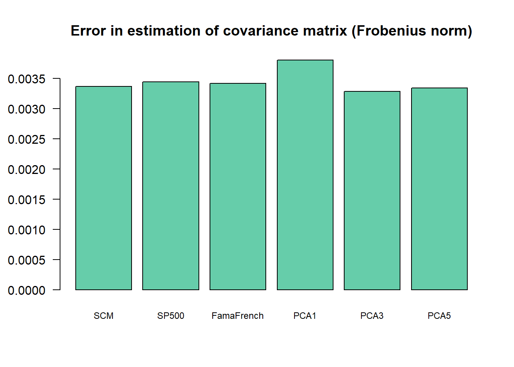
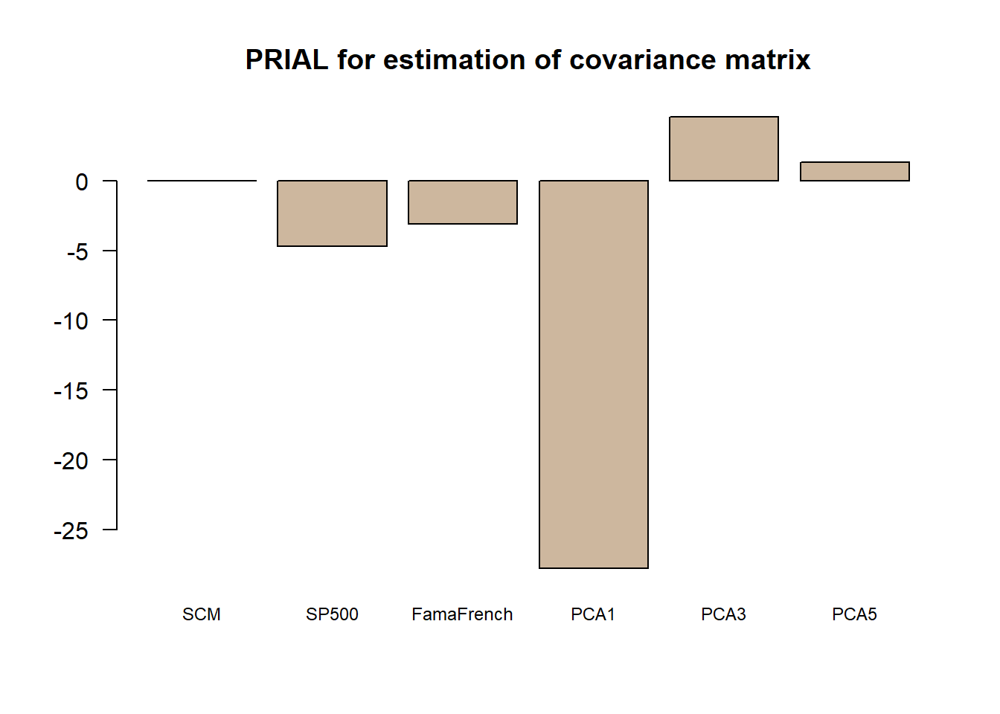

Chapter 5 Factor investing
5.1 Factor overview
Why factor models:
- decompose return into explainable and unexplainable components
- estimate abnormal returns
- simplify estimate of covariance structure
- provide portfolio risk analysis for each factor
Types of factors:
- observable (Macroeconomic factor model, Fundamental factor models)
- unobservable (Statistical factor models)
5.2 Macroeconomic factor
\[\underset{\boldsymbol{\alpha},\boldsymbol{\beta}}{\text{minimize}}\quad \sum_{t=1}^T\|\mathbf{x}_t - \boldsymbol{\alpha} - \boldsymbol{\beta}f_t\|^2\]
\[\begin{aligned} \hat{\boldsymbol{\beta}} & = {\sf cov}(\mathbf{x}_t,f_t)/{\sf var}(f_t)\\ \hat{\boldsymbol{\alpha}} & = \bar{x} - \hat{\boldsymbol{\beta}}\bar{f}\\ \hat{\boldsymbol{\epsilon}}_i & = \mathbf{x}_i - \alpha_i\mathbf{1} - \beta_i\mathbf{f}, \quad i=1,\ldots,N\\ \hat{\sigma}_i^2 & = \frac{1}{T-2}\hat{\boldsymbol{\epsilon}}_i^T\hat{\boldsymbol{\epsilon}}_i, \quad \hat{\boldsymbol{\Psi}} = \sf{diag}(\hat{\sigma}_1^2, \ldots, \hat{\sigma}_N^2)\\ \hat{\boldsymbol{\Sigma}} & = {\sf var}(f_t)\hat{\boldsymbol{\beta}}\hat{\boldsymbol{\beta}}^T + \hat{\boldsymbol{\Psi}} \end{aligned}\]
Data preparation:
from <- "2017-01-01" # do not change time period for this chapter
to <- "2020-09-30"
SP500_index <- get_data("^GSPC", from, to)
tickers <- c("AAPL", "AMD", "ADI", "ABBV", "AEZS", "A", "APD", "AA","CF")
prices <- get_data(tickers, from, to)
X <- diff(log(prices), na.pad = FALSE)
N <- ncol(X) # number of stocks
T <- nrow(X) # number of days
f <- diff(log(SP500_index), na.pad = FALSE)5.2.1 LS fitting – simple form
beta <- cov(X,f)/as.numeric(var(f))
alpha <- colMeans(X) - beta*colMeans(f)
colnames(alpha) <- "alpha"
colnames(beta) <- "beta"
sigma2 <- rep(NA, N)
for (i in 1:N) {
eps_i <- X[, i] - alpha[i] - beta[i]*f
sigma2[i] <- (1/(T-2)) * t(eps_i) %*% eps_i
}
Psi <- diag(sigma2)
Sigma <- as.numeric(var(f)) * beta %*% t(beta) + Psi
print(cbind(alpha, beta))
#> alpha beta
#> AAPL 0.0008020602 1.1758548
#> AMD 0.0021325642 1.5015398
#> ADI 0.0002235181 1.2301376
#> ABBV 0.0001306997 0.8308865
#> AEZS -0.0025614940 1.0490908
#> A 0.0003829361 1.0008615
#> APD 0.0003891594 0.9972563
#> AA -0.0011118010 1.5286561
#> CF -0.0007052049 1.24599815.2.2 LS fitting – matrix form
\[ \underset{\boldsymbol{\alpha},\boldsymbol{\beta}}{\text{minimize}}\quad \|\mathbf{X}^T - \boldsymbol{\alpha}\mathbf{1}^T - \boldsymbol{\beta}\mathbf{f}^T\|^2_F. \\ \boldsymbol{\Gamma} = [ \boldsymbol{\alpha}, \boldsymbol{\beta} ] = \mathbf{X}^T \tilde{\mathbf{F}} (\tilde{\mathbf{F}}^T \tilde{\mathbf{F}})^{-1} \] where \(\tilde{\mathbf{F}} = [\mathbf{1}, \mathbf{f}]\)
F_ <- cbind(ones = 1, f)
Gamma <- t(X) %*% F_ %*% solve(t(F_) %*% F_) # better: Gamma <- t(solve(t(F_) %*% F_, t(F_) %*% X))
colnames(Gamma) <- c("alpha", "beta")
alpha <- Gamma[, 1] # or alpha <- Gamma[, "alpha"]
beta <- Gamma[, 2] # or beta <- Gamma[, "beta"]
print(Gamma)
#> alpha beta
#> AAPL 1.027794e-03 1.1840884
#> AMD 1.491217e-03 1.4464899
#> ADI 7.909772e-05 1.2282732
#> ABBV 2.062470e-04 0.8223764
#> AEZS -2.820424e-03 0.9728238
#> A 4.486762e-04 0.9668272
#> APD 4.474286e-04 0.9977766
#> AA -1.587258e-03 1.5099957
#> CF -4.558246e-04 1.2391421
E <- xts(t(t(X) - Gamma %*% t(F_)), index(X)) # residuals
Psi <- (1/(T-2)) * t(E) %*% E
Sigma <- as.numeric(var(f)) * beta %o% beta + diag(diag(Psi))5.2.3 Estimating covriacne
\[ \boldsymbol{\Sigma} = var(f_t)\boldsymbol{\beta}\boldsymbol{\beta}^T + {\sf Diag}(\boldsymbol{\Psi}) \] where \(\boldsymbol{\Psi}\) is residual term
library(corrplot)
corrplot(cov2cor(Sigma),
type="upper",
tl.col="black", tl.srt=45, #Text label color and rotation
diag=FALSE)
corrplot(cov2cor(Psi), mar = c(0,0,1,0), order = "hclust", addrect = 3,
title = "Covariance matrix of residuals", diag = FALSE, tl.col="black", tl.srt=45)
Interestingly, we can observe that the automatic clustering performed on \(\boldsymbol{\Psi}\) correctly identifies the sectors of the stocks (information tech, health care and materials).
5.2.4 Evaluating ETFs performance
In this section, we will use the S&P 500 as the explicit market factor and assume risk free rate equal to 0.
Consider following six ETFs:
- SPY - SPDR S&P 500 ETF (index tracking)
- SPHB - PowerShares S&P 500 High Beta Portfolio (high beta)
- SPLV - PowerShares S&P 500 Low Volatility Portfolio (low beta)
- USMV - iShares Edge MSCI Min Vol USA ETF
- JKD - iShares Morningstar Large-Cap ETF
index <- c("SPY","SPHB", "SPLV", "USMV", "JKD")
ETFs <- get_data(index, from, to)
X_ETFs <- diff(log(ETFs), na.pad = FALSE)
# compute the alpha and beta of all the ETFs:
F_ <- cbind(ones = 1, f)
Gamma <- t(solve(t(F_) %*% F_, t(F_) %*% X_ETFs))
colnames(Gamma) <- c("alpha", "beta")
alpha <- Gamma[, 1]
beta <- Gamma[, 2]
print(Gamma)
#> alpha beta
#> SPY 8.369995e-05 0.9774232
#> SPHB -3.626276e-04 1.3149686
#> SPLV -4.360138e-07 0.8489474
#> USMV 9.751288e-05 0.8145470
#> JKD 6.413791e-05 0.9912818
# visualization of Gamma
{ par(mfrow = c(1,2)) # two plots side by side
barplot(rev(alpha), horiz = TRUE, main = "alpha", border = NA, col = "coral", cex.names = 0.75, las = 1)
barplot(rev(beta), horiz = TRUE, main = "beta", border = NA, col = "deepskyblue", cex.names = 0.75, las = 1)} # reset to normal single plot
TODO Explanation for the above Gamma graph for all 6 etfs
Sharpe ratio follows:
\[SR = \frac{E[x_t]}{\sqrt{{\sf var}[x_t]}} = \frac{\alpha + \beta E[f_t]}{\sqrt{\beta^2 {\sf var}[f_t] + \sigma^2}} = \frac{\alpha/\beta + E[f_t]}{\sqrt{{\sf var}[f_t] + \sigma^2/\beta^2}} \approx \frac{\alpha/\beta + E[f_t]}{\sqrt{{\sf var}[f_t]}}\]
idx_sorted <- sort(alpha/beta, decreasing = TRUE, index.return = TRUE)$ix
SR <- colMeans(X)/sqrt(diag(var(X)))
ranking <- cbind("alpha/beta" = (alpha/beta)[idx_sorted],
SR = SR[idx_sorted],
alpha = alpha[idx_sorted],
beta = beta[idx_sorted])
print(ranking)
#> alpha/beta SR alpha beta
#> USMV 1.043183e-04 0.02551718 8.379048e-05 0.8032196
#> SPY 8.468943e-05 0.06748293 8.293078e-05 0.9792342
#> JKD 7.614433e-05 -0.03192726 7.503134e-05 0.9853831
#> SPLV 1.161154e-05 0.03593687 9.657503e-06 0.8317158
#> SPHB -1.338772e-04 0.06790832 -1.800427e-04 1.3448349TODO Explain the resul
5.3 Fama-French
Data preparation: select a wider time period
# download Fama-French factors from website
# url <- "http://mba.tuck.dartmouth.edu/pages/faculty/ken.french/ftp/F-F_Research_Data_Factors_daily_CSV.zip"
# temp <- tempfile()
# download.file(url, temp, method = "libcurl", mode = "wb")
# unzip(temp, "F-F_Research_Data_Factors_daily.CSV")
# unlink(temp)
mydata <- read.csv("F-F_Research_Data_Factors_daily.CSV", skip = 4)
mydata <- mydata[-nrow(mydata), ] # remove last row
fama_lib <- xts(x = mydata[, c(2,3,4)], order.by = as.Date(paste(mydata[, 1]), "%Y%m%d"))
# compute the log-returns of the stocks and the Fama-French factors
F <- fama_lib[index(X)]/100\[\underset{\boldsymbol{\alpha},\boldsymbol{\beta}}{\text{minimize}}\quad \|\mathbf{X}^T - \boldsymbol{\Gamma}\tilde{\mathbf{F}}^T\|^2_F\] \[\boldsymbol{\Gamma} = \mathbf{X}^T \tilde{\mathbf{F}} (\tilde{\mathbf{F}}^T \tilde{\mathbf{F}})^{-1}\]
F_ <- cbind(ones = 1, F)
Gamma <- t(solve(t(F_) %*% F_, t(F_) %*% X))
colnames(Gamma) <- c("alpha", "b1", "b2", "b3")
alpha <- Gamma[, 1]
B <- Gamma[, 2:4]
print(Gamma)
#> alpha b1 b2 b3
#> AAPL 4.529985e-04 1.2487004 -0.2968196 -0.48086724
#> AMD 5.563015e-04 1.5721623 0.4135192 -1.01094408
#> ADI -8.001184e-05 1.2270888 0.4161068 -0.08642737
#> ABBV -8.212337e-05 0.8426005 -0.1908989 -0.20413363
#> AEZS -2.750911e-03 0.9389405 1.3673192 -0.01580922
#> A 1.393237e-04 0.9947335 -0.0606518 -0.22647058
#> APD 3.359118e-04 0.9894165 -0.3798878 0.07924767
#> AA -8.503783e-04 1.3720189 0.8666502 0.99663332
#> CF -4.388933e-05 1.1492337 0.5454800 0.603095415.4 Statistical/principal factor models
Recall the principal factor method for the model \(\mathbf{X}^T = \boldsymbol{\alpha}\mathbf{1}^T + \mathbf{B}\mathbf{F}^T + \mathbf{E}^T\) with K factors:
- PCA:
- sample mean: \(\hat{\boldsymbol{\alpha}} = \bar{\mathbf{x}} = \frac{1}{T}\mathbf{X}^T\mathbf{1}_T\)
- demeaned matrix: \(\bar{\mathbf{X}} = \mathbf{X} - \mathbf{1}_T\bar{\mathbf{x}}^T\)
- eigen-decomposition: \(\hat{\boldsymbol{\Sigma}} = \hat{\boldsymbol{\Gamma}} \hat{\boldsymbol{\Lambda}} \hat{\boldsymbol{\Gamma}}^T\)
- Estimates:
- \(\hat{\mathbf{B}} = \hat{\boldsymbol{\Gamma}_1} \hat{\boldsymbol{\Lambda}}_1^{1/2}\)
- \(\hat{\boldsymbol{\Psi}} = {\sf Diag}\left(\hat{\boldsymbol{\Sigma}} - \hat{\mathbf{B}} \hat{\mathbf{B}}^T\right)\)
- \(\hat{\boldsymbol{\Sigma}} = \hat{\mathbf{B}} \hat{\mathbf{B}}^T + \hat{\boldsymbol{\Psi}}\)
Update the eigen-decomposition: \(\hat{\boldsymbol{\Sigma}} - \hat{\boldsymbol{\Psi}} = \hat{\boldsymbol{\Gamma}} \hat{\boldsymbol{\Lambda}} \hat{\boldsymbol{\Gamma}}^T\)
Repeat Steps 2-3 until convergence.
K <- 3
alpha <- colMeans(X)
X_ <- X - matrix(alpha, T, N, byrow = TRUE)
Sigma_prev <- matrix(0, N, N)
Sigma <- (1/(T-1)) * t(X_) %*% X_
eigSigma <- eigen(Sigma)
while (norm(Sigma - Sigma_prev, "F")/norm(Sigma, "F") > 1e-3) {
B <- eigSigma$vectors[, 1:K, drop = FALSE] %*% diag(sqrt(eigSigma$values[1:K]), K, K)
Psi <- diag(diag(Sigma - B %*% t(B)))
Sigma_prev <- Sigma
Sigma <- B %*% t(B) + Psi
eigSigma <- eigen(Sigma - Psi)
}
cbind(alpha, B)
#> alpha
#> AAPL 1.518806e-03 0.004423866 -0.013661448 -1.788346e-05
#> AMD 2.091040e-03 0.009061167 -0.027857022 2.320626e-02
#> ADI 5.884322e-04 0.005641178 -0.015542966 -1.490695e-03
#> ABBV 5.472661e-04 0.003349058 -0.008726896 -6.934982e-04
#> AEZS -2.417018e-03 0.071585588 0.011675066 6.196286e-04
#> A 8.495955e-04 0.003759136 -0.010820120 -1.278586e-03
#> APD 8.611818e-04 0.003264547 -0.010724091 -2.846693e-03
#> AA -9.611000e-04 0.009394316 -0.023328796 -1.770902e-02
#> CF 5.801694e-05 0.006801149 -0.016344844 -9.315729e-035.5 Comparison of covariance matrix estimations
# prepare Fama-French factors
F_FamaFrench <- F # rename for easily knowing the meaning of variable
# prepare index
f_SP500 <- f # rename for easily knowing the meaning of variable
# split data into training and set data
T_trn <- round(0.45*T)
X_trn <- X[1:T_trn, ]
X_tst <- X[(T_trn+1):T, ]
F_FamaFrench_trn <- F_FamaFrench[1:T_trn, ]
F_FamaFrench_tst <- F_FamaFrench[(T_trn+1):T, ]
f_SP500_trn <- f_SP500[1:T_trn, ]
f_SP500_tst <- f_SP500[(T_trn+1):T, ]# sample covariance matrix
Sigma_SCM <- cov(X_trn)
# 1-factor model
F_ <- cbind(ones = 1, f_SP500_trn)
Gamma <- t(solve(t(F_) %*% F_, t(F_) %*% X_trn))
colnames(Gamma) <- c("alpha", "beta")
alpha <- Gamma[, 1]
beta <- Gamma[, 2]
E <- xts(t(t(X_trn) - Gamma %*% t(F_)), index(X_trn))
Psi <- (1/(T_trn-2)) * t(E) %*% E
Sigma_SP500 <- as.numeric(var(f_SP500_trn)) * beta %o% beta + diag(diag(Psi))
# Fama-French 3-factor model
F_ <- cbind(ones = 1, F_FamaFrench_trn)
Gamma <- t(solve(t(F_) %*% F_, t(F_) %*% X_trn))
colnames(Gamma) <- c("alpha", "beta1", "beta2", "beta3")
alpha <- Gamma[, 1]
B <- Gamma[, 2:4]
E <- xts(t(t(X_trn) - Gamma %*% t(F_)), index(X_trn))
Psi <- (1/(T_trn-4)) * t(E) %*% E
Sigma_FamaFrench <- B %*% cov(F_FamaFrench_trn) %*% t(B) + diag(diag(Psi))
# Statistical 1-factor model
K <- 1
alpha <- colMeans(X_trn)
X_trn_ <- X_trn - matrix(alpha, T_trn, N, byrow = TRUE)
Sigma_prev <- matrix(0, N, N)
Sigma <- (1/(T_trn-1)) * t(X_trn_) %*% X_trn_
eigSigma <- eigen(Sigma)
while (norm(Sigma - Sigma_prev, "F")/norm(Sigma, "F") > 1e-3) {
B <- eigSigma$vectors[, 1:K, drop = FALSE] %*% diag(sqrt(eigSigma$values[1:K]), K, K)
Psi <- diag(diag(Sigma - B %*% t(B)))
Sigma_prev <- Sigma
Sigma <- B %*% t(B) + Psi
eigSigma <- eigen(Sigma - Psi)
}
Sigma_PCA1 <- Sigma
# Statistical 3-factor model
K <- 3
alpha <- colMeans(X_trn)
X_trn_ <- X_trn - matrix(alpha, T_trn, N, byrow = TRUE)
Sigma_prev <- matrix(0, N, N)
Sigma <- (1/(T_trn-1)) * t(X_trn_) %*% X_trn_
eigSigma <- eigen(Sigma)
while (norm(Sigma - Sigma_prev, "F")/norm(Sigma, "F") > 1e-3) {
B <- eigSigma$vectors[, 1:K] %*% diag(sqrt(eigSigma$values[1:K]), K, K)
Psi <- diag(diag(Sigma - B %*% t(B)))
Sigma_prev <- Sigma
Sigma <- B %*% t(B) + Psi
eigSigma <- eigen(Sigma - Psi)
}
Sigma_PCA3 <- Sigma
# Statistical 5-factor model
K <- 5
alpha <- colMeans(X_trn)
X_trn_ <- X_trn - matrix(alpha, T_trn, N, byrow = TRUE)
Sigma_prev <- matrix(0, N, N)
Sigma <- (1/(T_trn-1)) * t(X_trn_) %*% X_trn_
eigSigma <- eigen(Sigma)
while (norm(Sigma - Sigma_prev, "F")/norm(Sigma, "F") > 1e-3) {
B <- eigSigma$vectors[, 1:K] %*% diag(sqrt(eigSigma$values[1:K]), K, K)
Psi <- diag(diag(Sigma - B %*% t(B)))
Sigma_prev <- Sigma
Sigma <- B %*% t(B) + Psi
eigSigma <- eigen(Sigma - Psi)
}
Sigma_PCA5 <- SigmaSigma_true <- cov(X_tst)
error <- c(SCM = norm(Sigma_SCM - Sigma_true, "F"),
SP500 = norm(Sigma_SP500 - Sigma_true, "F"),
FamaFrench = norm(Sigma_FamaFrench - Sigma_true, "F"),
PCA1 = norm(Sigma_PCA1 - Sigma_true, "F"),
PCA3 = norm(Sigma_PCA3 - Sigma_true, "F"),
PCA5 = norm(Sigma_PCA5 - Sigma_true, "F"))
print(error)
#> SCM SP500 FamaFrench PCA1 PCA3 PCA5
#> 0.003366215 0.003444389 0.003417521 0.003804895 0.003288151 0.003343664
barplot(error, main = "Error in estimation of covariance matrix (Frobenius norm)",
col = "aquamarine3", cex.names = 0.75, las = 1)
\[{\sf PRIAL} = 100\times \frac{\|\boldsymbol{\Sigma}_{\sf scm} - \boldsymbol{\Sigma}_{\sf true}\|_F^2 - \|\hat{\boldsymbol{\Sigma}} - \boldsymbol{\Sigma}_{\sf true}\|_F^2}{\|\boldsymbol{\Sigma}_{\sf scm} - \boldsymbol{\Sigma}_{\sf true}\|_F^2}\]
ref <- norm(Sigma_SCM - Sigma_true, "F")^2
PRIAL <- 100*(ref - error^2)/ref
print(PRIAL)
#> SCM SP500 FamaFrench PCA1 PCA3 PCA5
#> 0.000000 -4.698549 -3.071516 -27.761956 4.584330 1.335386
barplot(PRIAL, main = "PRIAL for estimation of covariance matrix",
col = "bisque3", cex.names = 0.75, las = 1) The final conclusion is that using factor models for covariance matrix estimation may help. In addition, it is not clear that using explicit factors helps as compared to the statistical factor modeling.